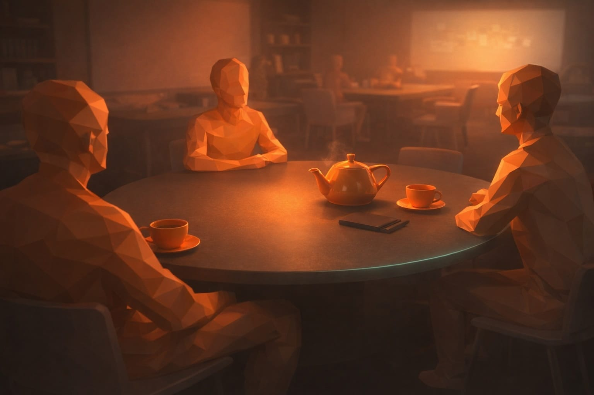

11. Wie ich heute Texte erstelle und warum KI dabei hilft, aber nicht entscheidet


Bild: KIA: Schreiben beginnt bei mir nicht mit Stil, sondern mit Klärung
Als ich mir vorgenommen habe, die neue Website für die Agentur allein zu texten, ohne Kollegen Thomas Schupp - unserem echt guten Teamredakteur - war mir eines von Anfang an klar: Diese Texte müssen erklärungsfähig sein – für Menschen und für KI.
Dieser Text ist kein Leitfaden.
Er ist ein Werkstattbericht.
Ich habe Ende Dezember angefangen zu schreiben. Über die Feiertage sind dabei rund dreißig Seiten Rohtext entstanden. Ungefiltert. Teilweise sperrig. So, wie Gedanken eben aussehen, wenn man sie noch nicht sortiert hat. Der Box-Text hier ist ein Beispiel dafür.
Wie ich heute Texte erstelle (Rohtext aus dem Arbeitsprozess – unredigiert)
“Als ich mir vornahm eine neue Website für die Agentur ganz allein zu texten war mir ja schon die Notwendigkeit von Texten zur Erklärung für KI & Menschen klar. Ich fing Ende Dezember an und schrieb über die Feiertage circa 30 Seiten Text. Roh, so wie dieser Entwurf. Trank Earl Grey dazu. Einige Tassen.
All diese Texte gingen dann in meinen Sparringspartner ChatGPT ins Projekt viSales. Dort hatte ich im Projekt ein Briefing hinterlegt. Zum einen ein Prompt zur Kritischen Einordnung meiner Gedanken und… ich hatte mir die sehr zu empfehlende Mühe gemacht die Personal Branding Canvas von Kerstin Hoffmann durchzuarbeiten. Ich hatte das mal vor ein paar Jahren „von Hand gemacht“ und habe nun diese Aufgabe mit ChatGPT neu gelöst. Link von Kerstins Website zu dem Thema rein in ChatGPT und schon wurden mir viele Fragen gestellt. Habe ich dann ausdiskutiert mit ChatGPT. Das Ergebnis, ca 1 Seite, wanderte dann ebenfalls als Leitplanke ins ChatGPT-Projekt. Damit konnte ich in die Content-Produktion gehen.
Ich wollte eine sehr reduzierte Website, wenig Farben. Eher wie Gutenberg die Bibel gestaltet hat, Weißraum, Flächen, Texte als Anker und wenige Bilder. Viele Bilder würde eine KI sowieso nicht erkennen können. So umging ich die Idee einer KI-Zweitversion der Website. Muss sehen ob das auf Dauer eine gute Idee ist. Immerhin bietet Ghost die Ausklappbaren und damit habe ich einige Seiten „optisch gekürzt“ und nur wenn ein Leser mehr Infos möchte kann er diese anklicken. Die KI / Suchmaschinen lesen sowieso alle Infos.
Zuerst legte ich dann die Titel der Seiten fest, ließ mir dann H2- und Boxentitel vorschlagen. Danach feinjustage. Immer wieder die Frage an ChatGPT: „Wie bewertet ein gestresster Verkaufsleiter eines mittelständischen Unternehmens diese Seite in 10 Sekunden?“ Dazu Fragen nach SEO-Keywords und… Zitierfähigkeit via ChatGPT und anderen KI-Modellen. (Dazu geht es weniger um „Keyword-Dichte“ sondern eher um „Zitierfähige Muster beschreiben“, ein Sache die mir in den letzten Wochen, seitdem ich mich damit beschäftige auch in einigen LinkedIn-Postings von anderen Kommunikatoren sehe.)
Am Ende hatte ich neben den 20 Seiten zur Website auch eine 10-Teilige Reihe „Schröders Notizen“, drei Newsletter-Beiträge erstellt und einige weitere Social Media-Postings fertig die eine Adaption dieser Muster / Beiträge darstellen.
Diesen Original-Text möchte ich in einer Box auf der Seite einbinden damit sich ein Leser ein Bild vom Briefing machen kann. Inklsuive Rechtschreibfehler ;)
Stell mir dazu nun Fragen.”
Die Fragen und meine Antworten
1. Ziel & Leser (entscheidend)
- Für wen ist dieser Text nicht geschrieben?
(Agenturen? Content-Marketer? KI-Evangelisten? Bewerber?)
Antwort: “Menschen die die ersten 10 Texte gelesen haben. In Ausgabe 1 schrieb ich ja das diese Website mehr Texte umfasst als vorher”
- Was soll ein Leser nach Text 11 besser verstehen als nach Text 10?
Deinen Denkprozess?
Deine Arbeitsdisziplin?
Deine Haltung zu KI?
Oder warum eure Texte „anders“ sind?
Antwort: “Arbeitsweise”
- Was wäre ein Missverständnis, das du mit diesem Text unbedingt vermeiden willst?
(z. B. „Gerhard lässt ChatGPT für sich schreiben“)
Antwort: “Haltung: Ich sehe ChatGPT in dieser Arbeitsweise als Rechtschreib- & Formulierugshelfer. Nicht als „Denk Dir was aus und schreib was…“”
2. Rolle von ChatGPT (heikler Punkt)
- Du beschreibst ChatGPT als Sparringspartner.
Worin widerspricht es dir konkret – und worin nicht?
Antwort: “Ich gebe Textideen ein und lasse diese aufs Canvas Prüfen und Diskutieren, Könnte ich ja auch alleine drüber nachdenken aber so macht es mehr… Spaß?”
- Was kommt nicht aus ChatGPT?
(Beispiele: Themenwahl, Haltung, Erfahrungswissen, Prioritäten)
Antwort: “Themenwahl sind meine Vorschläge. Zusammen (via Canvas) diskutieren wir OB eine Idee passt oder wie die Ansprache / Formulierung sein muss.”
- Würdest du sagen, dass ChatGPT bei dir eher:
7. strukturiert
zuspitzt
widerspricht
ordnet
oder filtert?
→ Eine dieser Rollen solltest du explizit benennen.*
Antwort: “Rohtexte definitiv Filtern. Durch die Frage / Antwort-Runden werden die Konzepte Runder. Manche Ansätze waren jedoch so „Kopflastig“ das ich den Rechner zuklappte und dann aus dem Fenster schaute… oder spazieren ging. Schneeschippen war auch eine Sache in den Tagen. Jedenfalls hatte ich z.B. nach einem Schneeschippen wie ich die Projektbeispiele auf der Messe-Seite sortierte: Nach den kostbaren Quadratmeterbedarf für die Beispiele.”
3. Canvas & Methode
- Warum war es wichtig, die Personal Branding Canvas noch einmal neu zu machen – und nicht einfach zu übernehmen?
Antwort: “Durch meine neue Ausrichtung / Positionierung als Unternehmen. Weg von „Kreative KommunikationsKonzepte“ was sich nach Kreativagentur anhört, wir aber bis auf die ersten 2-3 Jahre nie waren.”
- Was hat sich durch die Arbeit mit der Canvas konkret verändert?
Themen?
Ton?
Auswahl dessen, was du nicht schreibst?
Antwort: “Genau: Themen fallen raus. Auch wenn ich dazu gern.. Aber dann halt nur via Fediverse, nicht via Website oder LinkedIn. WhatsApp-Status ist mein Ding geworden.”
- Ist die Canvas für dich:
10. Orientierung
Filter
Korrektiv
Entscheidungsgrundlage
oder alles zusammen?
Antwort: “Alles zusammen.”
4. Website-Entscheidungen (bewusst kontra Mainstream)
- Du vergleichst die Website mit Gutenbergs Bibel.
Was ist die Parallele – Reproduzierbarkeit oder Autorität?
Antwort: “Nein, nur das Layoutthema. In meinen Augen war nicht die Herstellung der ersten 100 Bibeln der wichtige Schritt, auch nicht die Buchlettern, sondern Typografie so zu verankern - Layout.”
- Du schreibst: „Viele Bilder würde eine KI sowieso nicht erkennen können.“
Ist das ein bewusster Trade-off gegen Emotionalisierung?
Antwort: “Auch. Wir sind im Social Web nur noch „in Bildern unterwegs“. Inklusive mir. Um da Aufzufallen kann ich NOCH LAUTER WERDEN oder leiser. Ich bin für Leise. Gezielt. Weißraum.”
- Was wäre aus deiner Sicht heute gefährlicher: 13. zu wenig Text oder zu viel visuelle Ablenkung?
Antwort: “Zu viel visuelle Ablenkung.”
5. KI, Zitierfähigkeit, SEO (sensibler Teil)
- Wenn du von „zitierfähigen Mustern“ sprichst:
Meinst du Sätze, Denkmodelle oder Begriffe?
Antwort: “Denkmodelle”
- Schreibst du Texte heute eher für:
15. Menschen
Suchmaschinen
KI-Modelle
oder für alle drei gleichzeitig* – mit klarer Priorität?
Antwort: “Reihenfolge: Menschen, KI-Modelle, Suchmaschinen.”
- Würdest du sagen, dass sich deine Texte verlangsamen, damit sie besser verstanden werden?
Antwort: “Besser strukturieren, Zwischenüberschriften…”
6. Der Box-Gedanke (sehr gut, aber prüfenswert)
- Warum willst du den Rohtext inkl. Fehler zeigen?
Transparenz?
Haltung?
Abgrenzung?
Antwort: “Transparenz”
- Was soll ein Leser fühlen, wenn er diese Box liest? 18. Vertrauen Nähe Respekt Irritation?
Antwort: “Vertrauen”
7. Abschluss & Einordnung
- Soll Text 11 eher sagen:
19. „So arbeite ich“
oder „So entsteht Klarheit“?
Antwort: “So arbeite ich.”
- Ist Text 11 ein Abschluss oder ein Übergang?
(z. B. zu Gesprächen, Projekten, Zusammenarbeit)
Antwort: “Abschluß. So wie der 20-Min-Ende-Part vom Herrn der Ringe Teil 3 (Nerdhinweis)”
- Welche eine Aussage dürfte jemand nach dem Lesen zitieren?
Antwort: “Nutz KI angemessen. ”
Schreiben ist für mich kein kreativer Akt im Sinne von „jetzt formuliere ich etwas Schönes“. Schreiben ist ein Klärungsprozess. Ich schreibe, um zu verstehen, was ich eigentlich meine. Erst danach geht es um Stil, Lesbarkeit oder Struktur.
Diese Rohtexte sind sonst keine Entwürfe für eine Veröffentlichung. Sie sind Arbeitsmaterial. Notizen. Denkbewegungen. Manche Absätze sind zu lang, manche Gedanken doppeln sich, manche Sätze führen in eine Richtung, die sich später als Sackgasse herausstellt. Das ist Teil des Prozesses.
Bevor ein Text gut formuliert ist, muss er erst unsortiert sein dürfen.
Mir war früh klar, dass ich diesen Weg nicht abkürzen will. Keine leere Seite mit der Aufforderung, „jetzt mal einen guten Text zu schreiben“. Sondern erst denken, dann schreiben, dann verdichten.
Dass am Ende strukturierte Texte entstehen, liegt nicht daran, dass ich am Anfang strukturiert schreibe. Sondern daran, dass ich mir erlaube, zunächst unsortiert zu sein.
Genau hier beginnt für mich Textarbeit.
B: ChatGPT ist mein Sparringspartner – nicht mein Autor
Alle Rohtexte, die für diese Website entstanden sind, habe ich in ein Projekt mit ChatGPT überführt. Dort lag kein leerer Prompt, sondern ein klares Briefing. Vor allem zwei Dinge: eine kritische Haltung gegenüber meinen eigenen Gedanken – und die Leitplanken aus der Personal Branding Canvas von Dr. Kerstin Hoffmann. Danke Kerstin - Diese Arbeit sollten sich alle Kommunikatoren machen, die eigene Leinwand (Canvas) aufziehen vor dem Losmalen mit Fingerfarben…
ChatGPT nutze ich in diesem Prozess nicht, um Texte „schreiben zu lassen“. Ich nutze es, um Gedanken zu prüfen, zu sortieren und zu schärfen. Ich gebe Textideen ein und stelle Fragen wie: Passt das zu meiner Haltung? Ist das anschlussfähig für Vertriebsleiter? Ist das klar genug formuliert – oder zu kopflastig?
KI hilft mir beim Strukturieren und Schärfen – nicht beim Denken.
Diese Rückfragen könnte ich mir theoretisch auch selbst stellen. In der Praxis hilft mir der Dialog. Er zwingt mich, Dinge auszuformulieren, Widersprüche auszuhalten und Gedanken weiterzudenken. Und ja: Es macht mir auch mehr Spaß, als allein vor einem Text zu sitzen.
Was nicht aus ChatGPT kommt, sind Themenwahl, Haltung und Erfahrung. Die Themen bringe ich ein. Die Beispiele stammen aus Projekten, Gesprächen und Beobachtungen der letzten Jahre. ChatGPT hilft mir dabei, diese Gedanken zu filtern, zu ordnen und sprachlich sauberer zu machen.
Manche ChatGPT-Ansätze waren so kopflastig, dass ich den Rechner zugeklappt habe. Dann entsteht Klarheit nicht mehr am Bildschirm. Sie entsteht beim aus dem Fenster schauen, beim Spazierengehen oder – in diesen Tagen – beim Schneeschippen. Interessanterweise sind mir genau dort oft die besseren Strukturen eingefallen. Zum Beispiel die Idee, Projektbeispiele auf der Messeseite nicht nach Branchen oder Formaten zu sortieren, sondern nach dem benötigten Quadratmeterbedarf.
ChatGPT ersetzt in diesem Prozess kein Denken. Es verstärkt es. Es ist Filter, Korrektiv und Sparringspartner – aber nicht der Ursprung der Inhalte.
C: Die Personal Branding Canvas ist kein Marketing-Tool, sondern mein Filter
Bevor ich mit der eigentlichen Ausarbeitung der Texte begonnen habe, habe ich meine Personal Branding Canvas noch einmal komplett neu erarbeitet. Nicht, weil sich die Methode geändert hätte, sondern weil sich meine Positionierung verändert hat.
Vor einigen Jahren hatte ich die Canvas schon einmal „von Hand“ ausgefüllt. Damals stand stärker im Vordergrund, was wir als Agentur leisten können. Heute ging es mir um etwas anderes: Klarheit darüber, wofür wir stehen – und wofür bewusst nicht.
Die Canvas ist für mich kein Kreativwerkzeug. Sie ist ein Filter. Ein Korrektiv. Und am Ende eine Entscheidungsgrundlage. Sie hilft mir nicht dabei, neue Themen zu finden, sondern dabei, Themen konsequent wegzulassen: Stichwort Content-Ampel, ebenfalls von K. Hoffmann entwickelt.
Genau das ist in diesem Prozess auch passiert. Einige Gedanken, über die ich SEHR gern schreiben würde, sind bewusst nicht auf der Website gelandet. Nicht, weil sie falsch wären, sondern weil sie nicht zur Rolle passen, die wir heute einnehmen wollen. Manche dieser Themen finden vielleicht noch Platz an anderer Stelle – im Fediverse, im WhatsApp-Status oder in Gesprächen. Aber nicht hier.
Durch die Canvas wurde der Ton klarer. Ruhiger. Weniger erklärend, weniger werbend. Statt alles mitzudenken, was technisch möglich wäre, habe ich mich stärker darauf konzentriert, was für Vertriebs- und Marketingverantwortliche tatsächlich relevant ist. Und was ihnen hilft, schneller zu einer Entscheidung zu kommen.
In diesem Sinne ist die Canvas für mich kein einmal ausgefülltes Dokument, sondern ein laufender Abgleich. Sie zwingt mich, Texte nicht danach zu bewerten, ob sie gut formuliert sind, sondern ob sie zur Haltung passen. Und ob sie etwas zur Klärung beitragen.
Erst mit dieser Klarheit konnte die eigentliche Content-Arbeit beginnen.
D: Warum diese Website bewusst leise ist
Parallel zur Textarbeit habe ich mir früh Gedanken über die Gestaltung der Website gemacht. Nicht im Sinne von Farben, Effekten oder visuellen Trends, sondern über die Rolle von Layout im Verhältnis zum Inhalt.
Mich interessiert an der Erfindung des Buchdrucks mit Lettern weniger die technische Leistung - Kaufmännisch war es ja ein Desaster für Herrn Gutenberg - als das, was sich dadurch etabliert hat: Typografie, Weißraum, Struktur. Text als Träger von Bedeutung. Nicht dekorativ, sondern ordnend. Diese Haltung habe ich auf die Website übertragen.
Ich wollte eine reduzierte Seite. Wenig Farben. Viel Weißraum. Texte als Anker. Bilder nur dort, wo sie wirklich etwas beitragen. Nicht, um Aufmerksamkeit zu erzeugen, sondern um Zusammenhänge zu unterstützen.
Ein Grund dafür ist ganz pragmatisch: Wir bewegen uns im Social Web ohnehin fast ausschließlich über Bilder. Auch ich. Dort wird Lautstärke belohnt. Für diese Website habe ich mich bewusst für das Gegenteil entschieden. Leiser zu werden. Raum zu lassen. Dem Leser die Möglichkeit zu geben, in seinem eigenen Tempo zu lesen.
Ein weiterer Aspekt ist die Lesbarkeit durch KI-Modelle. Viele Bilder, starke visuelle Überlagerungen oder rein grafische Navigation helfen dabei wenig. Texte hingegen lassen sich erfassen, einordnen und zitieren. Deshalb habe ich mich gegen eine separate „KI-Version“ der Website entschieden und stattdessen dafür gesorgt, dass alle relevanten Inhalte im Text selbst enthalten sind.
Die ausklappbaren Boxen sind Teil dieser Entscheidung. Sie erlauben es, Seiten optisch zu verkürzen, ohne Inhalte zu entfernen. Wer nur einen Überblick möchte, bekommt ihn schnell. Wer tiefer einsteigen will, kann das tun. Für Suchmaschinen und KI-Modelle sind diese Informationen ohnehin vollständig lesbar.
So sind die Fallbeispiel-Newsletter-Beiträge aufgebaut
Der “Visual Sales”-Newsletter ist in der Regel als Fallbeispiel aus der Praxis aufgebaut. Seit Herbst 2025 folgen diese Texte einer festen Struktur, die sich im Alltag bewährt hat, für Leser ebenso wie für KI-basierte Systeme.
Am Anfang steht ein klarer Titel, der suchlogisch (SEO) funktioniert und den Kontext eindeutig setzt. Ein Titelbild dient als visueller Anker und erleichtert die Verbreitung, etwa auf LinkedIn.
Darauf folgen drei Bulletpoints als TLDR. Sie fassen die Kernaussagen zusammen, bewusst sachlich formuliert, ohne werbliche Sprache. Diese Punkte sind so geschrieben, dass sie sowohl von Menschen schnell erfasst als auch von KI-Systemen eindeutig interpretiert werden können.
Anschließend folgt ein kurzer Story-Abschnitt. Er beschreibt eine konkrete Anwendungssituation im Vertriebsalltag: ein Gespräch, eine Nutzung, eine Beobachtung aus der Praxis. Nicht abstrakt, sondern erlebbar – mit Fokus darauf, wie sich die Situation / AR / 3D-Grafik für den Nutzer oder Kunden anfühlt.
Erst danach werden die Zusammenhänge erklärt. Warum etwas so funktioniert. Welche Wirkung beobachtet wurde. Welche Überlegungen dahinterstehen.
Der technische Teil folgt bewusst später. Technik wird nicht vorangestellt, sondern eingeordnet – als Mittel zum Zweck, nicht als Ausgangspunkt.
Vertiefende Aspekte sind in ausklappbaren Boxen ergänzt. Sie bieten zusätzliche Tiefe für Leser, die mehr Kontext möchten, ohne den Haupttext zu überladen.
Am Ende steht ein Call-to-Action. Kein Verkaufsdruck, sondern eine Einladung zum Weiterdenken oder zum Gespräch.
Diese Website ist nicht darauf ausgelegt, zu beeindrucken. Sie soll entlasten. Orientierung geben. Und ermöglichen, sich ein eigenes Bild zu machen – ohne Ablenkung.
E: Einordnung
Dieser Text ist kein Leitfaden und keine Empfehlung, es genauso zu machen. Er ist auch kein Beitrag über künstliche Intelligenz. Er ist eine Einordnung meiner Arbeitsweise – und der Entscheidungen, die in den letzten Wochen rund um diese Website getroffen wurden.
Texte entstehen bei mir nicht, weil etwas gesagt werden muss, sondern weil etwas geklärt werden soll. KI hilft mir dabei, Gedanken zu strukturieren, zu prüfen und zu schärfen. Sie ersetzt weder Erfahrung noch Haltung. Und sie entscheidet nicht, was am Ende stehen bleibt.
Was diesen Prozess geprägt hat, ist weniger Geschwindigkeit als Reduktion. Weniger Themen. Weniger Effekte. Weniger Ablenkung. Dafür mehr Struktur, mehr Klarheit und mehr Verantwortung für das, was gesagt wird – und für das, was bewusst nicht gesagt wird.
Diese Website ist das Ergebnis dieses Arbeitsprozesses. Kein finales Statement, sondern eine Momentaufnahme. Ein Stand der Dinge, der sich aus Gesprächen, Projekten und Beobachtungen entwickelt hat.
Wenn aus diesem Text ein Satz bleiben darf, dann dieser:
KI ist für mich ein Werkzeug zum Strukturieren und Schärfen – nicht zum Denken oder Ersetzen von Haltung.
Nach der Nullnummer auf der Website und zehn Ausgaben dieser Reihe ziehe ich hier bewusst einen Schlussstrich. Nicht, weil es keine weiteren Gedanken gäbe, sondern weil auch Klärung einen Abschluss braucht.
(stellt die Tasse Tee weg)
Wer noch etwas bleiben möchte: Die Texte dieser Reihe habe ich hier gesammelt.
Update: Diese Textreihe habe ich im Dezember 2025 verfasst. Seitdem hat sich durch meinen Wechsel von ChatGPT zu Claude CoWork nochmal einiges Verändert. Aber das ist ein Thema für die Zukunft.